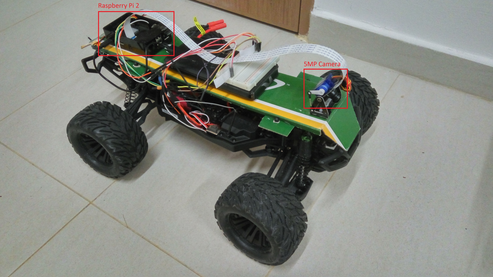
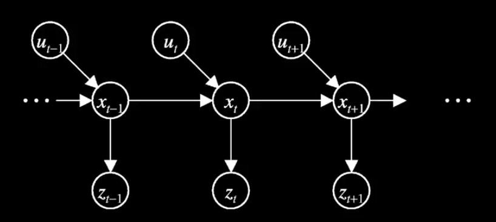

Visualizing and Understanding Convolutional Network
Outline
- Gradient method: take the gradient of certain node with respect to the input image
- Vanilla gradient [https://arxiv.org/abs/1312.6034]
- Guided backpropagation [https://arxiv.org/abs/1412.6806]
- Integrated gradient [https://arxiv.org/abs/1703.01365]
- Visual backpropagation [https://arxiv.org/abs/1611.05418]
- Layer-wise relevance propagation
- Class activation mapping
- Gradient-weighted class activation mapping
- Deconvolution
- Activation maximization method: find the input image that maximally activates a node
- Other ideas
- style transfer
- deep dream
Vanilla gradient¶
$$SaliencyMap = gradient = \frac{\partial \text{output of a node}}{\partial \text{input image}}$$Lire la suite...
Self Driving Toy Car
Objective¶
To make a lane follower based on a standard RC car like this https://www.youtube.com/watch?v=-v6q2dNZTU8.
Design¶
The basic idea is to use a Raspberry Pi to control the RC car. The Raspberry Pi makes steering action based on camera image.

Hardware
For the uninitiated, the receiver of a standard RC car receives throttle and steering signals from the transmitter. The signals are converted to PWM pulses by the receiver to directly control the speed of the motor and the steering angle of the servo. The following figure pictures the wiring of a standard RC car:
Lire la suite...
Follow the Regularized Leader with Adaptive Decaying Proximal
Derivation of FTRL-ADP¶
Problem¶
This is a variant of the FTRL-proximal proposed by McMahan et al. in Ad click prediction: a view from the trenches.
Lire la suite...
3D Vehicle Detection
Background¶
Perception unit is a key component of self driving car. It relies on various sensors such as LIDAR, CAMERA and RADAR to identify and locate surrounding objects.
The most important objects to be detected are other vehicles.
[This is a work in progress for UDACITY-DIDI challenge.]
[github: https://github.com/experiencor/didi-starter/tree/master/simple_solution]
Problem
Given the LIDAR and CAMERA data, determine the location and the orientation in 3D of surrounding vehicles.
Lire la suite...
Predicting Malicious URLs
Background¶
Traditional firewall relies on whitelist and blacklist to decide whether to allow or block a domain name. This scheme is problematic as the lists need to be updated manually and regularly. Outdated lists would limit the accessibility of the network and/or fail to detect novel malicious domain names.
So we aim to train a machine learning model to predict whether a domain name is malicious. The model can be fully developped into a smart firewall solution to police network traffic without relying on static lists.
Lire la suite...
Basic Yolo with Keras
Introduction¶
This is a proof of concept implementation of YOLOv2 using Keras.
Outline of Steps
+ Initialization of parameters + Download VOC data from http://host.robots.ox.ac.uk/pascal/VOC/voc2007/VOCtrainval_06-Nov-2007.tar + Download pre-trained weights from http://pjreddie.com/media/files/tiny-yolo-voc.weights + Specify the directory of annotations by setting variable *ann_di* + Specify the directory of images by setting variable *img_dir* + Specity the path of pre-trained weights by setting variable *wt_path* + Construct equivalent network in Keras + Network arch from https://github.com/pjreddie/darknet/blob/master/cfg/tiny-yolo-voc.cfg + Load the pretrained weights + Preprocess VOC data + Perform training (for POC, the weights of the last layers are randomized before training) + Perform detection on an image with newly trained weights
Lire la suite...Image Segmentation
Experiments with some traditional segmentation methods. Outline:
- DBSCAN
- K-mean
- Meanshift
- Graphcut
- Watershed
Segmentation by DBSCAN¶
Lire la suite...Weight Initialization
Why setting all weights and biases to 0 is a bad idea?¶
As $a_j^l = \sigma\big(\sum _k w_{jk}^l a_k^{l-1} +b_j^l\big)$, all nodes will produce the same activation. Although the weights and the biases would later diverge if the scalar components of the input vector are different, this is still not a good idea for the general input.
Lire la suite...Problem with Sigmoid and Sum of Squares Loss
Sigmoid and Quadratic Cost¶
$$a^L = \frac{1}{1 + e^{-z^L}}$$$$C = \sum_j (a^L_j-y_j)^2$$Backpropagating the loss to the biases and weights of the output layer:
$$\frac{\partial C}{\partial b_j^L} = \frac{\partial C}{\partial a_j^L}\frac{\partial a_j^L}{\partial b_j^L} = (a_j^L-y_j)\sigma'(z_j^L)$$$$\frac{\partial C}{\partial w_{jk}^L} = \frac{\partial C}{\partial a_j^L}\frac{\partial a_j^L}{\partial w_{jk}^L} = a_k^{L-1}(a_j^L-y_j)\sigma'(z_j^L)$$As $\sigma'(z_j^L) = \sigma(z_j^L) (1- \sigma(z_j^L))$, $\frac{\partial C}{\partial b_j^L}$ and $\frac{\partial C}{\partial w_{jk}^L}$ become small when $\sigma(z_j^L)\approx 0$ or $\sigma(z_j^L) \approx 1$. This behavior is bad when $\sigma(z_j^L)$ is near to the wrong extreme.
Lire la suite...Object Tracking
Definition of Posterior Belief:
$$Bel(x_t) \equiv P(x_t | z_{1:t}, u_{1:t})$$1st Assumption: Markovian Property
$$P(x_t | x_{t-1}, z_{1:t-1}, u_{1:t}) = P(x_t | x_{t-1}, u_t)$$2nd Assumption: Sensor Independent
$$P(z_t | x_t, z_{1:t-1}, u_{1:t}) = P(z_t | x_t)$$Graphical Model Illustration

Recursive relationship between $Bel(x_t)$ and $Bel(x_{t-1})$
\begin{equation} \begin{split} Bel(x_t) & = P(x_t | z_{1:t}, u_{1:t}) \\ & = \eta P(z_t | x_t, z_{1:t-1}, u_{1:t})P(x_t | z_{1:t-1}, u_{1:t}) \\ & = \eta P(z_t | x_t)P(x_t | z_{1:t-1}, u_{1:t}) \\ & = \eta P(z_t | x_t)\int P(x_t | x_{t-1}, z_{1:t-1}, u_{1:t})P(x_{t-1} | z_{1:t-1}, u_{1:t})dx_{t-1} \\ & = \eta P(z_t | x_t)\int P(x_t | x_{t-1}, u_t)P(x_{t-1} | z_{1:t-1}, u_{1:t-1})dx_{t-1} \\ & = \eta P(z_t | x_t)\int P(x_t | x_{t-1}, u_t)Bel(x_{t-1})dx_{t-1} \end{split} \end{equation}
Lire la suite...